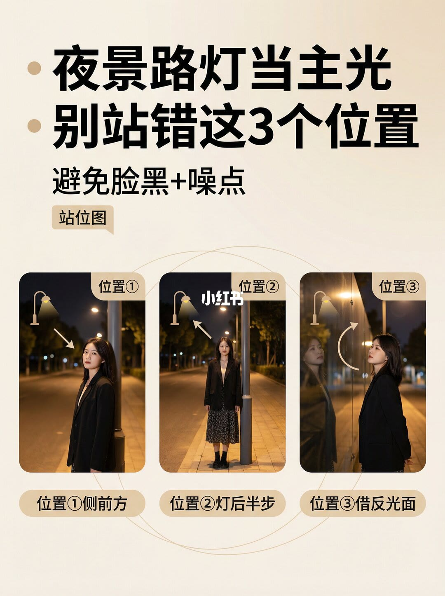
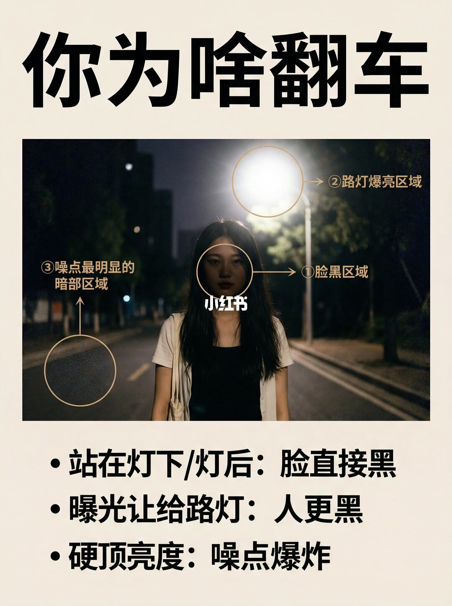
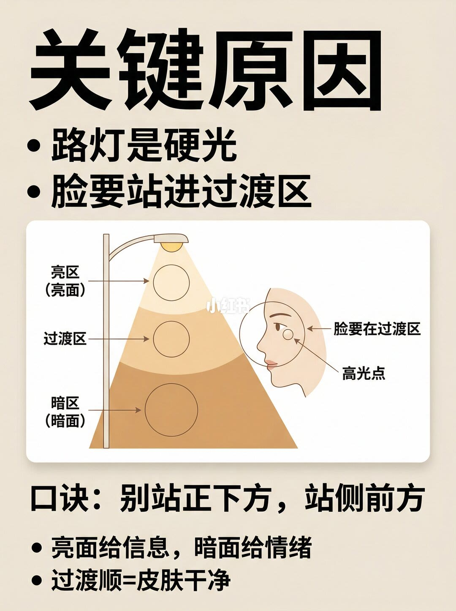
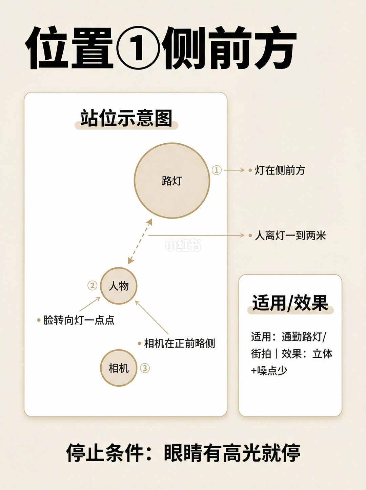
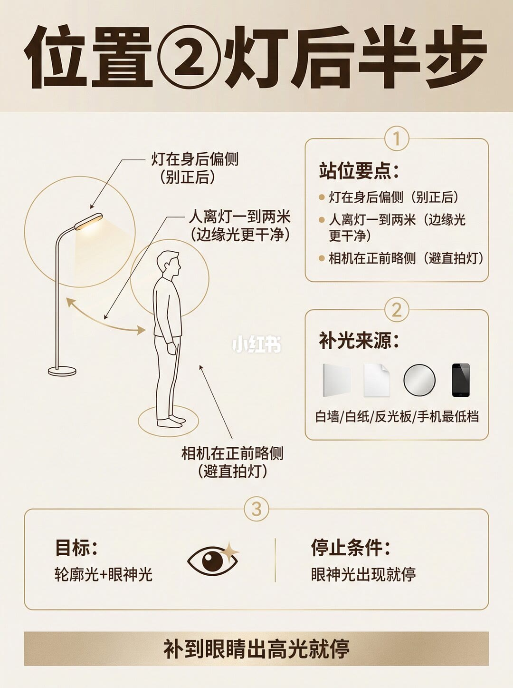
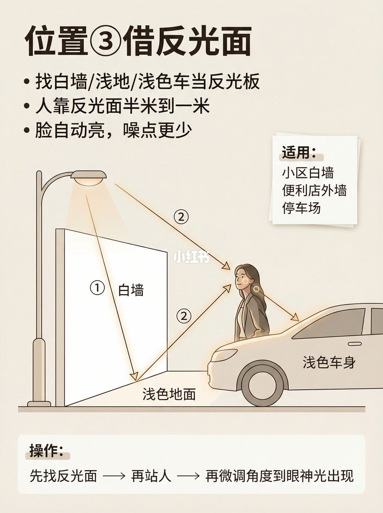
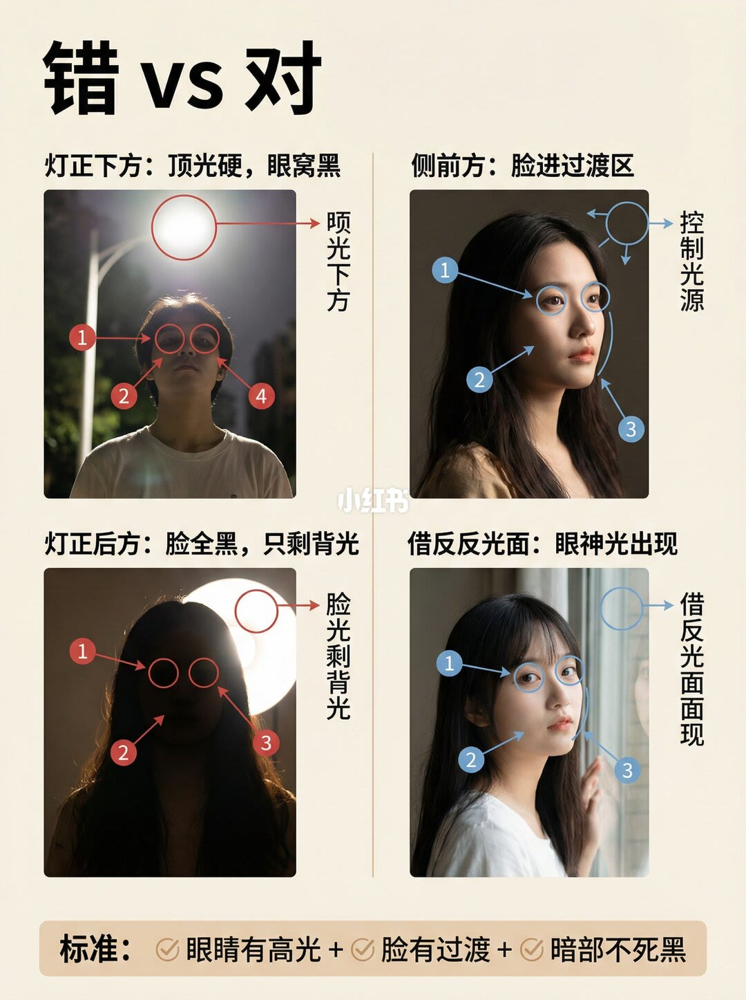
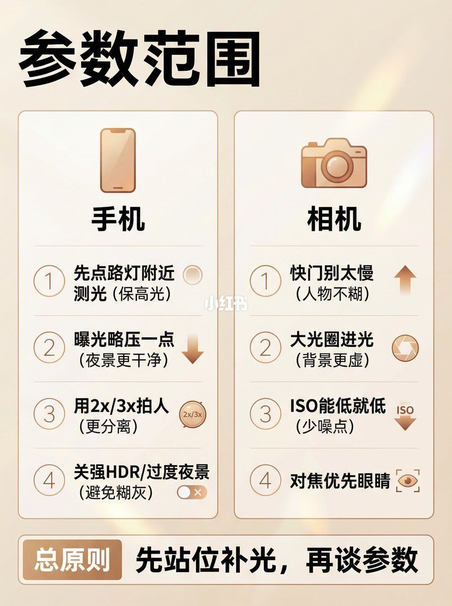
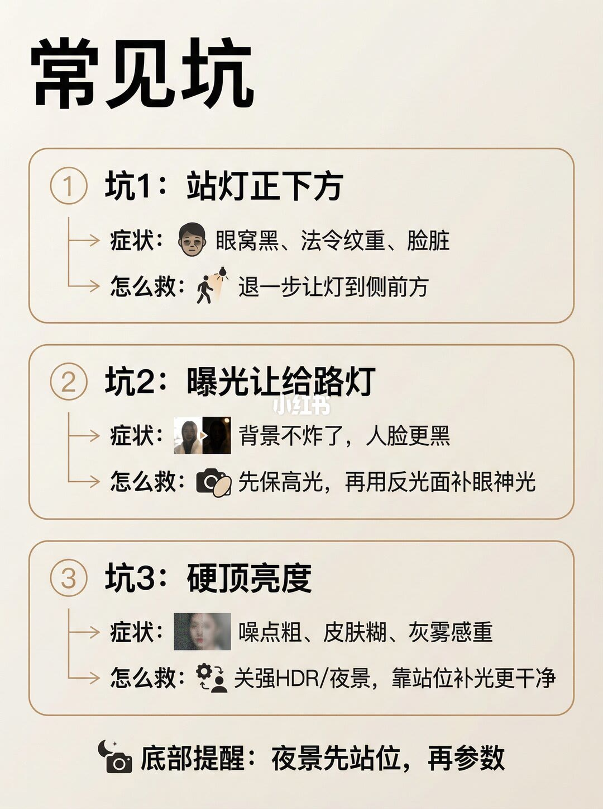
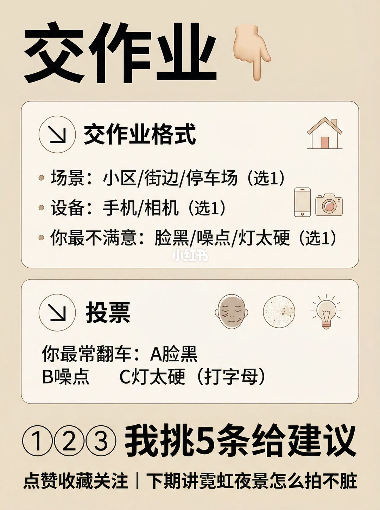

图文实录 · 小红书 · 爱拍照的七十(努力涨粉中)
夜景脸黑噪点？站位错了
夜景里脸黑、噪点炸，笔记把原因写成站位：人站在路灯正下方或正后方，曝光又让给了爆亮的灯，再靠后期硬提亮度。路灯是硬光，脸要进过渡区。三种能用的位置是侧前方、灯后半步再补眼神光、以及白墙浅地浅色车当反光面。合格线是眼睛有高光、脸有过渡、暗部不死黑。参数排在站位后面，十页没有印出具体快门或 ISO 数字。
1/10
封面：路灯当主光的三格站位

大标题是「夜景路灯当主光」，下一行「别站错这3个位置」，副题「避免脸黑+噪点」，角标「站位图」。三张夜景人像分别标位置①、位置②、位置③。底栏写：位置①侧前方，位置②灯后半步，位置③借反光面。灯和脸之间的箭头没有印成句子，每张箭头的精确落点无法确认。
2/10
翻车是三件事叠在一起

标题「你为啥翻车」。照片上标了三处：①脸黑区域，②路灯爆亮区域，③噪点最明显的暗部区域。底栏三条：站在灯下或灯后，脸直接黑；曝光让给路灯，人更黑；硬顶亮度，噪点爆炸。这一页没有快门和感光度。
3/10
脸要站进过渡区

标题「关键原因」。两条：路灯是硬光；脸要站进过渡区。示意图把光分成亮区（亮面）、过渡区、暗区（暗面），并写脸要在过渡区，过渡带上标了高光点。口诀：别站正下方，站侧前方。页底：亮面给信息，暗面给情绪；过渡顺等于皮肤干净。亮区和暗区的亮度没有数字。
4/10
位置①：灯在侧前方

标题「位置①侧前方」，中间是站位示意图。能读清的句子是：灯在侧前方；人离灯一到两米；脸转向灯一点点；相机在正前略侧。适用写通勤路灯/街拍，效果写立体+噪点少。停止条件：眼睛有高光就停。示意图上的圆点没有再标米以外的角度。
5/10
位置②：灯后半步，再补到眼神光

标题「位置②灯后半步」。站位要点三条：灯在身后偏侧（别正后）；人离灯一到两米（边缘光更干净）；相机在正前略侧（避直拍灯）。补光来源写成白墙、白纸、反光板、手机最低档。目标是轮廓光+眼神光。停止条件：眼神光出现就停。底栏：补到眼睛出高光就停。手机最低档没有写出亮度百分比。
6/10
位置③：白墙、浅地、浅色车

标题「位置③借反光面」。三条：找白墙、浅地或浅色车当反光板；人靠反光面半米到一米；脸自动亮，噪点更少。适用写小区白墙、便利店外墙、停车场。示意图标了白墙、浅色地面、浅色车身，以及①②两段反射。操作：先找反光面，再站人，再微调角度到眼神光出现。反射箭头的精确夹角无法确认。
7/10
错和对，并给出三条标准

标题「错vs对」。左上：灯正下方，顶光硬，眼窝黑。右上：侧前方，脸进过渡区。左下：灯正后方，脸全黑，只剩背光。右下标题印成「借反反光面：眼神光出现」，比第 1 页和第 6 页的「借反光面」多了一个「反」。四张对照图上有编号圈，圈旁短字无法确认，不把看不清的箭头说明写成原文。底栏标准：眼睛有高光，脸有过渡，暗部不死黑。
8/10
参数只给方向，不给数字

标题「参数范围」。手机四条：先点路灯附近测光（保高光）；曝光略压一点（夜景更干净）；用 2x/3x 拍人（更分离）；关强 HDR 或过度夜景（避免糊灰）。相机四条：快门别太慢（人物不糊）；大光圈进光（背景更虚）；ISO 能低就低（少噪点）；对焦优先眼睛。总原则：先站位补光，再谈参数。这一页没有印出快门分数，也没有印出 ISO 数值。
9/10
三个坑和各自的救法

标题「常见坑」。坑 1 站灯正下方：症状是眼窝黑、法令纹重、脸脏；怎么救是退一步让灯到侧前方。坑 2 曝光让给路灯：症状是背景不炸了，人脸更黑；怎么救是先保高光，再用反光面补眼神光。坑 3 硬顶亮度：症状是噪点粗、皮肤糊、灰雾感重；怎么救是关强 HDR 或夜景，靠站位补光更干净。底部提醒：夜景先站位，再参数。
10/10
交作业：场景、设备、最不满意的一点

标题「交作业」。格式三项各选 1：场景是小区、街边或停车场；设备是手机或相机；最不满意的是脸黑、噪点或灯太硬。投票：你最常翻车，A 脸黑，B 噪点，C 灯太硬，打字母。底行：①②③我挑 5 条给建议。再下一行：点赞收藏关注，下期讲霓虹夜景怎么拍不脏。这一页没有新的站位距离。
收尾
先让脸进过渡区，再谈参数
结论
夜景脸黑和噪点，笔记归到站位而不是先拧快门。路灯是硬光，人不要站正下方，也不要站正后方把曝光让给灯。侧前方让脸进过渡区，离灯一到两米，眼睛有高光就停。灯后半步要的是轮廓光，再用白墙、白纸、反光板或手机最低档补到眼神光出现。没有近处反光物时，白墙、浅地或浅色车离人半米到一米。合格是眼睛有高光、脸有过渡、暗部不死黑。参数只写了方向：保高光、略压曝光、快门别太慢、ISO 能低就低，并关掉过强的 HDR 或夜景。
支撑页
三格站位在 1/10。翻车的脸黑、灯爆、暗部噪点在 2/10。过渡区口诀在 3/10。侧前方距离和停止条件在 4/10。灯后半步和补光来源在 5/10。反光面距离和操作顺序在 6/10。错对对照和三条标准在 7/10。手机与相机的参数方向在 8/10。三个坑的症状和救法在 9/10。交作业选项在 10/10。
边界
十页没有印出快门分数或 ISO 数值。第 8 页的「快门别太慢」「ISO 能低就低」不能换成具体档位。一到两米、半米到一米是站位距离，不是光比。第 7 页对照图上的编号圈没有读出旁注，圈具体指哪一块皮肤无法确认；右下标题印成「借反反光面」，与其余页的「借反光面」不一致，按印出的记。示例人像是否同一人、是否实拍，画面无法确认。第 10 页的「挑 5 条」是互动，不是拍摄步骤。